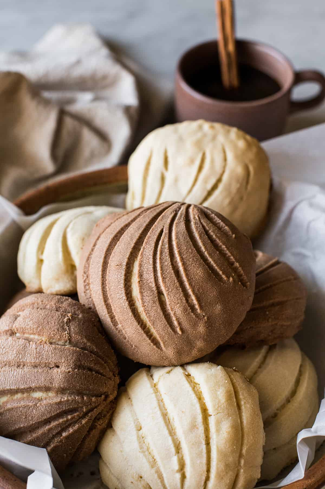

Description
Concha (Spanish, 'shell'), plural conchas, is a traditional Mexican sweet
bread roll (pan dulce). Conchas get their name from their round shape
and their striped, seashell-like appearance. A concha consists of two
parts, a sweetened bread roll, and a crunchy topping (composed of flour,
butter, and sugar).
Recipe for 16 Conchas
Ingredients
-
500 grams (3-¾ cups) of All-Purpose Flour, plus extra for dusting
-
125 grams (½ cup + 2 tablespoon) white Sugar
-
7.5 grams ( 2- ½ teaspoon) Instant Dry Yeast
-
3 grams (½ teaspoon) Salt
-
100 grams ( ½ cup) Non-Salted Butter, at room temperature
-
100 ml Eggs (use a measuring cup, it equals about 6-½ Tbps )
-
5 ml (1 teaspoon) Vanilla extract
-
120 ml (½ cup) Milk (warm)
Topping
-
100 grams (½ cup plus 1 teaspoon) Vegetable Shortening
(extra to grease the dough and baking sheets)
-
100 grams ( ⅞ of a cup) Confectioner Sugar
-
120 grams (1 cup) All-Purpose Flour
-
5 grams ( 2-½ teaspoon) Cocoa powder (for half of the topping,
if desired)
-
2.5 grams ( 1 teaspoon) Cinnamon (optional for the white topping)
Steps
-
Have each ingredient ready and measured (by weight) before starting,
and thoroughly read the notes above. Mix the all-purpose flour, yeast,
sugar, and salt in the bowl of a stand mixer at medium speed, just to
mix it well.
-
Add the butter and mix well (using the stand mixer with the hook
attachment), then mix in the eggs and vanilla extract and slowly
pour the milk in little by little until the dough looks cohesive
(you may need less or more milk, as some flours soak up more liquid
than others). Keep beating the mixture for about 7 minutes at medium
speed.
-
Add a little more flour around the inside of the bowl (2-3 tablespoons),
just enough for the dough to separate from the container. The dough
should be soft and slightly sticky.
-
Place the dough on your floured working table and knead it just
enough to shape it into a ball.
-
Place this ball in a large greased bowl to rest. Cover it with a
plastic wrap (or wax paper) and a kitchen napkin. Let the dough
rest in a warm place for about 2 hours until it doubles in size.
I usually turn the light on in my oven and place the bowl inside,
close to the light. Be aware that if your kitchen is cold, the
dough will take longer to rise. Be patient and do not try to
proceed to the next step until the mixture has doubled in size.
Making the Concha toppings
-
Once the dough has risen and doubled in size, place it onto a floured
surface and let it rest for about 5 minutes. Divide the dough into
16 small balls (60 grams each). To shape the balls, lightly flour
your hands and place each small ball on the working surface and
gently press down with your hand, rotating your hand to form the balls.
-
Place them onto greased baking sheets and continue until you’ve
finished shaping all of the dough.
-
Using your hands, grease the top of each ball with a little
shortening. Do not skip this step, as it will help the topping adhere
to the dough.
-
To add the topping, flour your hands and divide the topping paste
into 16 balls. Use your hands to press down on each one to form a
small, flat circle (I like to use a sheet of plastic, like when
making tortillas). Place this disk onto the ball of dough, and
press it down very firmly.
-
Once you’ve finished placing the topping on the buns, use a
concha cutter or a knife to decorate them with the traditional
concha shape.
-
Allow the conchas to rise in a warm place until they are almost
double in size. Depending on the temperature of your kitchen,
this step could take anywhere from 1 to 2 hours. Do not leave
them to rise any longer, because if you let them grow too much
they will collapse inside the oven. Bake in a preheated oven at
325º degrees for 20 minutes, or until the bottom of the conchas
are lightly golden. If you are placing more than one baking sheet
in your oven, rotate them after 10-12 minutes. Move the sheet on
the bottom rack to the top rack and vice versa to have an even baking.